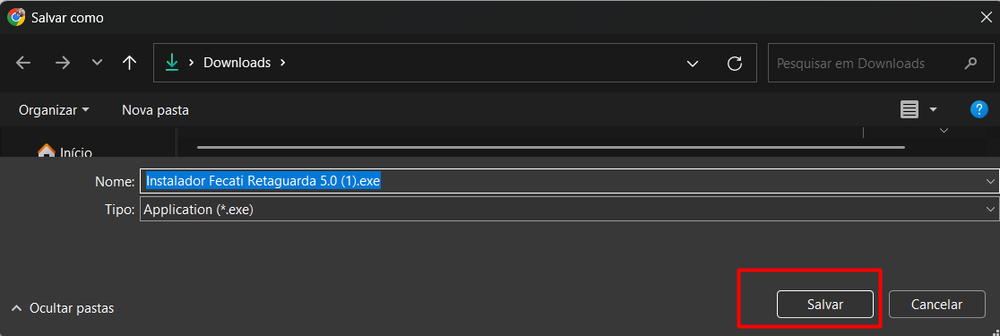
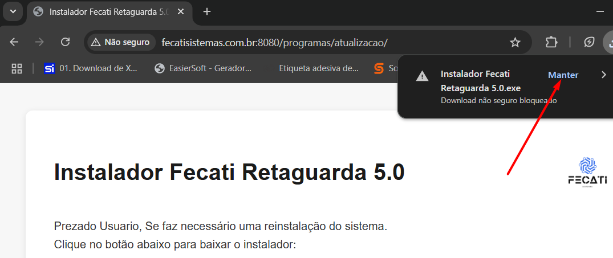
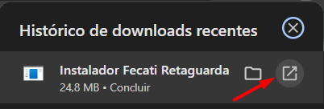
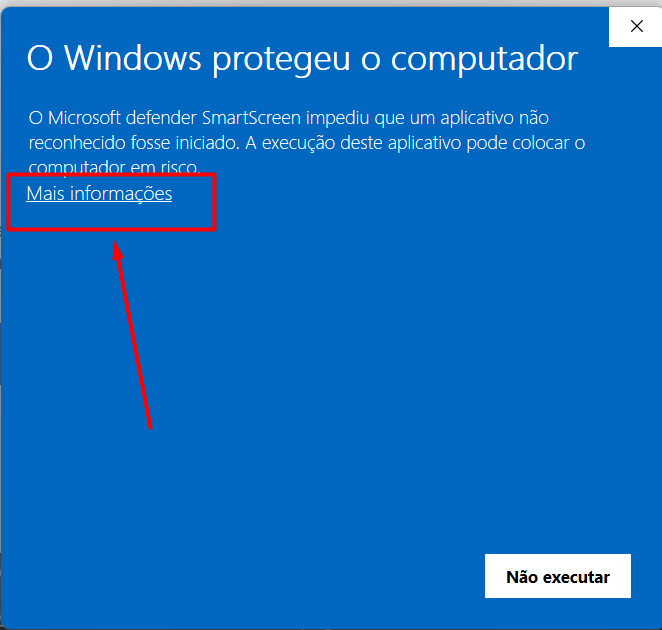
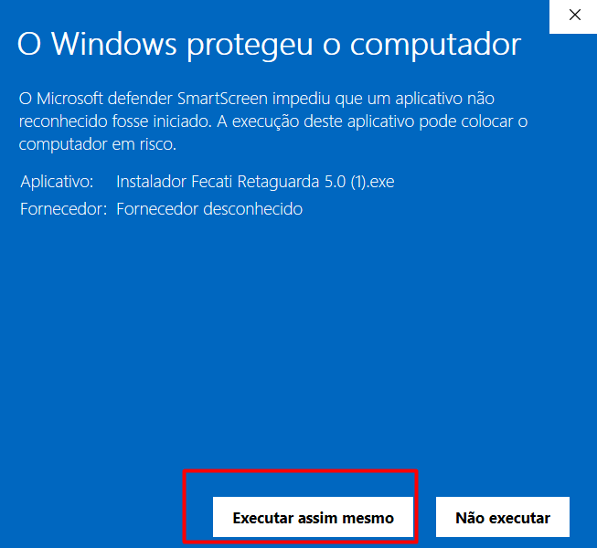
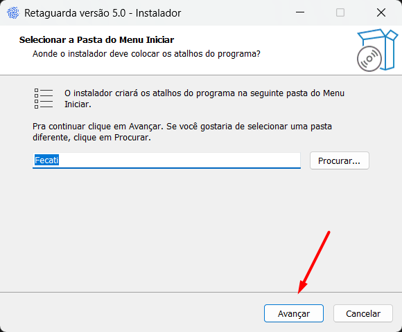
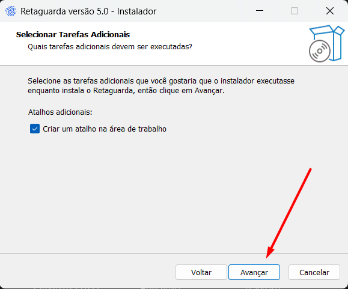
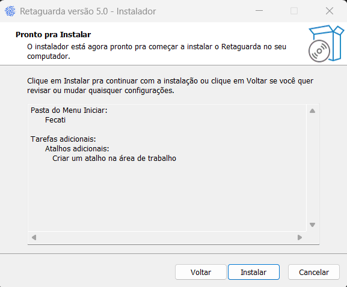
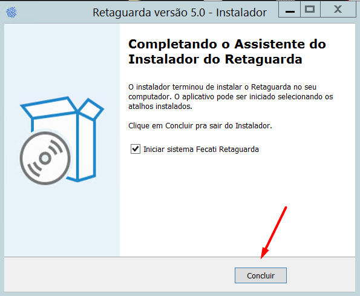

Prezado Usuario,
Para garantir uma maior segurança do sistema, é necessária a reinstalação.
Clique no botão abaixo para baixar o instalador:
Baixar Instalador
Guia Rápido de Instalação
- O download será iniciado, clique em "Salvar":

- caso o download seja bloqueado clique em manter:

- Após o download, execute o arquivo para iniciar a instalação.

- Caso o windows apresente a seguinte tela, clique em "Mais Informações"

- Em seguida clique em "Executar assim mesmo"

- Sera iniciado o processo de instalação. Clique em Avançar.

- Clique novamente em Avançar.

- Clique em Instalar.

- Espere até que a instalação termine e clique em Concluir.

Se tiver qualquer dúvida durante a instalação, entre em contato com o suporte técnico.